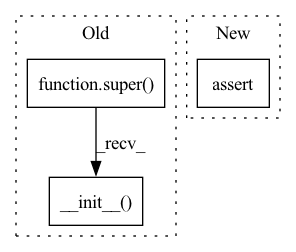

Pattern ID :14165

Before Change
C: Number of output channels
def __init__(self, C=12, N=320, activation="relu", final_activation=None):
super(HyperpriorSynthesis, self).__init__()
cnn_kwargs = dict(kernel_size=5, stride=2, padding=2, output_padding=1)
self.activation = getattr(F, activation)
self.final_activation = final_activation
After Change
super(HyperpriorDLMM, self).__init__(n_channels=bottleneck_capacity)
assert bottleneck_capacity <= 128, "Will probably run out of memory!"
self.bottleneck_capacity = bottleneck_capacity
self.scale_lower_bound = scale_lower_bound
self.mixture_components = mixture_components
In pattern: SUPERPATTERN
Frequency: 9
Non-data size: 3
Instances
Fragment ID: 47213184
Project Name: justin-tan/high-fidelity-generative-compression
Commit Name: bfea0331309355675403fc614470a5914697f92c
Time: 2020-08-18
Author: justan@student.unimelb.edu.au
File Name: src/network/hyperprior.py
M Class Name: HyperpriorDLMM
N Class Name: HyperpriorDLMM
M Method Name: __init__(7)
N Method Name: __init__(5)
M Parent Class: CodingModel
N Parent Class: nn.Module
M File Name: src/network/hyperprior.py
N File Name: src/network/hyperprior.py
M Start Line: 413
M End Line: 425
N Start Line: 427
N End Line: 464
'>
Before Change
def __init__(self, missing_rate: float = 0.5,
missing_type: str = "uniform",
missing_value : float = float("nan")):
super().__init__()
assert missing_type in ("uniform", "structural"), missing_type
self.missing_rate = missing_rate
self.missing_type = missing_type
self.missing_value = missing_value
After Change
missing_type: str = "uniform",
missing_value : float = float("nan")):
assert missing_type in ("uniform", "structural"), missing_type
assert missing_rate < 1, missing_rate
self.missing_rate = missing_rate
self.missing_type = missing_type
self.missing_value = missing_value
'>
Fragment ID: 47213185
Project Name: edisonleeeee/greatx
Commit Name: 1fa223c6be13eed98ba0eb183efeba02d9656d5f
Time: 2022-06-24
Author: cnljt@outlook.com
File Name: graphwar/utils/missing_feature.py
M Class Name: MissingFeature
N Class Name: MissingFeature
M Method Name: __init__(4)
N Method Name: __init__(4)
M Parent Class: BaseTransform
N Parent Class: BaseTransform
M File Name: graphwar/utils/missing_feature.py
N File Name: graphwar/utils/missing_feature.py
M Start Line: 50
M End Line: 50
N Start Line: 44
N End Line: 44
'>
Before Change
val_path = os.path.join(
root, "chest-xray", "val")
super(ChestXrayDataset, self).__init__(
root=val_path, transform=self.transform)
elif mode == "test":
if download:
test_path = os.path.join(
root, tag, "chest_xray", "test")
After Change
tag = "chest-xray-pneumonia"
modes = ["train", "val", "test"]
assert mode in modes, "Available options for mode: train, val, test"
self.target_transform = target_transform
'>
Fragment ID: 47213186
Project Name: tuttelikz/farabio
Commit Name: f1d17ab62f7226de3ebd472422d38aa48b177fc3
Time: 2021-07-27
Author: s.askaruly@gmail.com
File Name: farabio/data/biodatasets.py
M Class Name: ChestXrayDataset
N Class Name: ChestXrayDataset
M Method Name: __init__(8)
N Method Name: __init__(7)
M Parent Class: ImageFolder
N Parent Class: ImageFolder
M File Name: farabio/data/biodatasets.py
N File Name: farabio/data/biodatasets.py
M Start Line: 101
M End Line: 144
N Start Line: 100
N End Line: 131
'>
Before Change
train_path = os.path.join(
root, "chest-xray", "train")
super(ChestXrayDataset, self).__init__(
root=train_path, transform=self.transform)
elif mode == "val":
if download:
val_path = os.path.join(
root, tag, "chest_xray", "val")
After Change
tag = "chest-xray-pneumonia"
modes = ["train", "val", "test"]
assert mode in modes, "Available options for mode: train, val, test"
self.target_transform = target_transform
'>
Fragment ID: 47213187
Project Name: tuttelikz/farabio
Commit Name: bd0374049d13c5b0d7cad83da095e2cbc01725d2
Time: 2021-07-29
Author: s.askaruly@gmail.com
File Name: farabio/data/biodatasets.py
M Class Name: ChestXrayDataset
N Class Name: ChestXrayDataset
M Method Name: __init__(8)
N Method Name: __init__(7)
M Parent Class: ImageFolder
N Parent Class: ImageFolder
M File Name: farabio/data/biodatasets.py
N File Name: farabio/data/biodatasets.py
M Start Line: 101
M End Line: 144
N Start Line: 100
N End Line: 131
'>
Before Change
norm_layer: nn.Module = nn.BatchNorm2d,
activation_layer: nn.Module = nn.ReLU
):
super().__init__(
Conv2d1x1(in_channels, out_channels, stride=stride,
padding=padding, bias=bias, groups=groups),
norm_layer(out_channels, eps=bn_epsilon, momentum=bn_momentum),
activation_layer(inplace=True)
)
class Conv2dBlock(nn.Sequential):
def __init__(
After Change
norm_position: str = None
):
norm_position = norm_position if norm_position else BN_POSIITON
assert norm_position in ["before", "after", "none"], ""
bn_epsilon = bn_epsilon if bn_epsilon else BN_EPSILON
bn_momentum = bn_momentum if bn_momentum else BN_MOMENTUM
'>
Fragment ID: 47213178
Project Name: ffiirree/cv-models
Commit Name: 4c9ed7edb86670cd5f91cf01a8525b25471f1ff0
Time: 2021-07-21
Author: ice_qi@163.com
File Name: models/core/blocks.py
M Class Name: Conv2d1x1Block
N Class Name: Conv2d1x1Block
M Method Name: __init__(12)
N Method Name: __init__(11)
M Parent Class: nn.Sequential
N Parent Class: nn.Sequential
M File Name: models/core/blocks.py
N File Name: models/core/blocks.py
M Start Line: 93
M End Line: 98
N Start Line: 102
N End Line: 123
'>
Before Change
norm_layer: nn.Module = nn.BatchNorm2d,
activation_layer: nn.Module = nn.ReLU
):
super().__init__(
nn.Conv2d(in_channels, out_channels, kernel_size=kernel_size,
bias=False, stride=stride, padding=padding, groups=groups),
norm_layer(out_channels, eps=bn_epsilon, momentum=bn_momentum),
activation_layer(inplace=True),
)
class ResBasicBlock(nn.Module):
def __init__(
After Change
norm_position: str = None,
):
norm_position = norm_position if norm_position else BN_POSIITON
assert norm_position in ["before", "after", "none"], ""
bn_epsilon = bn_epsilon if bn_epsilon else BN_EPSILON
bn_momentum = bn_momentum if bn_momentum else BN_MOMENTUM
'>
Fragment ID: 47213180
Project Name: ffiirree/cv-models
Commit Name: 4c9ed7edb86670cd5f91cf01a8525b25471f1ff0
Time: 2021-07-21
Author: ice_qi@163.com
File Name: models/core/blocks.py
M Class Name: Conv2dBlock
N Class Name: Conv2dBlock
M Method Name: __init__(12)
N Method Name: __init__(11)
M Parent Class: nn.Sequential
N Parent Class: nn.Sequential
M File Name: models/core/blocks.py
N File Name: models/core/blocks.py
M Start Line: 115
M End Line: 120
N Start Line: 139
N End Line: 160
'>
Before Change
higher_is_better: bool = False
def __init__(self) -> None:
super().__init__()
@overrides
def evaluate(self, arch: ArchaiModel, dataset: DatasetProvider,
budget: Optional[float] = None) -> float:
After Change
higher_is_better: bool = False
def __init__(self, search_space) -> None:
assert search_space.arch_type in ["gpt2", "gpt2-flex"]
self.search_space = search_space
def _load_and_prepare(self, config) -> torch.nn.Module:
'>
Fragment ID: 47213182
Project Name: microsoft/archai
Commit Name: 43554986f8e0768c03baccdeddd4ef745466a1ae
Time: 2022-12-16
Author: pierokauffmann@gmail.com
File Name: archai/nlp/objectives/transformer_flex_latency.py
M Class Name: TransformerFlexOnnxLatency
N Class Name: TransformerFlexOnnxLatency
M Method Name: __init__(2)
N Method Name: __init__(1)
M Parent Class: Objective
N Parent Class: Objective
M File Name: archai/nlp/objectives/transformer_flex_latency.py
N File Name: archai/nlp/objectives/transformer_flex_latency.py
M Start Line: 24
M End Line: 24
N Start Line: 32
N End Line: 34
'>
Before Change
norm_layer: nn.Module = nn.BatchNorm2d,
activation_layer: nn.Module = nn.ReLU
):
super().__init__(
PointwiseConv2d(inp, oup, stride=stride),
norm_layer(oup, eps=bn_epsilon, momentum=bn_momentum),
activation_layer(inplace=True),
)
class SEBlock(nn.Module):
def __init__(self, channels, ratio):
After Change
norm_position: str = None,
):
norm_position = norm_position if norm_position else BN_POSIITON
assert norm_position in ["before", "after", "none"], ""
bn_epsilon = bn_epsilon if bn_epsilon else BN_EPSILON
bn_momentum = bn_momentum if bn_momentum else BN_MOMENTUM
'>
Fragment ID: 47213183
Project Name: ffiirree/cv-models
Commit Name: 4c9ed7edb86670cd5f91cf01a8525b25471f1ff0
Time: 2021-07-21
Author: ice_qi@163.com
File Name: models/core/blocks.py
M Class Name: PointwiseBlock
N Class Name: PointwiseBlock
M Method Name: __init__(10)
N Method Name: __init__(8)
M Parent Class: nn.Sequential
N Parent Class: nn.Sequential
M File Name: models/core/blocks.py
N File Name: models/core/blocks.py
M Start Line: 304
M End Line: 308
N Start Line: 369
N End Line: 395